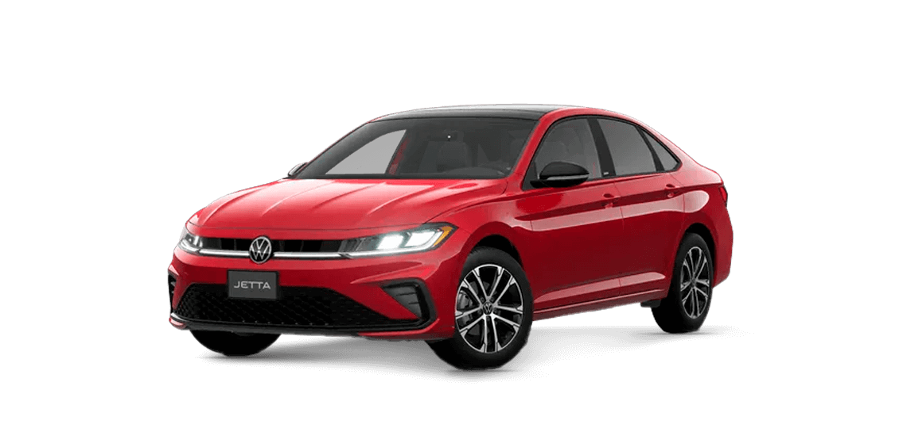

Preço: R$ 250.990
Descrição: O Volkswagen Jetta GLI 2025 é a versão esportiva do sedã médio, que chega com um design renovado, mantendo o potente motor 2.0 TSI turbo de 231 cv e câmbio DSG de 7 velocidades
ÚNICO DONO
SEM RETOQUE
GARANTIA DE FÁBRICA
CAUTELAR 100% APROVADA
MANUAL E CHAVE RESERVA
PACOTE DE TRÊS PRIMEIRAS REVISÕES PAGAS NA VW
AEROFÓLIO ORIGINAL VW
INTERNA EM FULL LED (INCLUI ORIGINAIS)
VW PLAY ATUALIZADO COM LAY-OUT 2026
RETROVISORES REBATÍVEIS ELETRICAMENTE
COM SENSORES DE PONTO CEGO E PROJEÇÃO EM LED
ESCRITO "JETTA" (INCLUI ORIGINAIS)
231 CV
TURBO
FRONT ASSIST
PAINEL DIGITAL
PARTIDA NO BOTÃO
CHAVE PRESENCIAL
BANCOS EM COURO
CONTROLE DE LARGADA
COMPUTADOR DE BORDO
RETROVISORES ELÉTRICOS
VOLANTE MULTIFUNCIONAL
SISTEMA DE SOM BEATS
FARÓIS E LANTERNAS EM LED
MULTIMÍDIA E GPS INTEGRADO
SENSOR DE CHUVA E CREPUSCULAR
FRENAGEM AUTÔNOMA EM MANOBRAS
FRENAGEM AUTÔNOMA DE EMERGÊNCIA
BANCO DO MOTORISTA COM AJUSTE ELÉTRICO
SENSOR DE ESTACIONAMENTO DIANTEIRO
SENSOR DE ESTACIONAMENTO TRASEIRO
FREIO DE ESTACIONAMENTO ELÉTRICO
RETROVISOR INTERNO FOTOCROMÁTICO
PILOTO AUTOMÁTICO ADAPTATIVO
CONTROLE DE ESTABILIDADE
CONTROLE DE TRAÇÃO
CARREGADOR WIRELLES
PADDLE SHIFT
TETO SOLAR
CARRO EXTREMAMENTE NOVO!!!
- Ano/Modelo: 2025
- Quilometragem: 5851 km
- Motor: 1.3 FIREFLY FLEX TREKKING CVT
- Câmbio: Automático
- Cor: Branco
- Entrada USB;
Rádio AM/FM;
Conexão Bluetooth;
Espelhamento da tela do celular;
Volante multifuncional
Desembaçador traseiro;
Limpador e lavador do vidro traseiro;
Banco do motorista com ajuste de altura;
Luz no porta-malas.